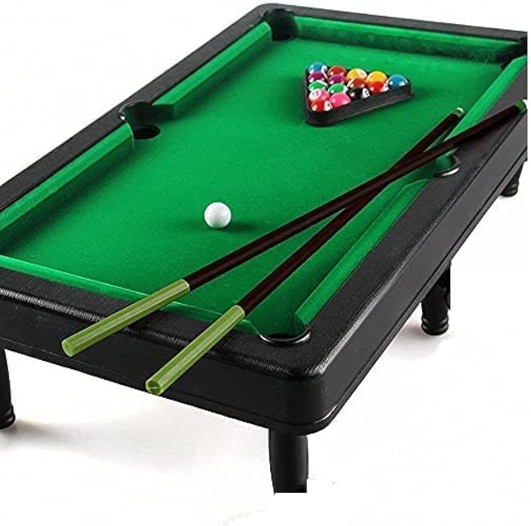

4 Games For Men
1.cricket game

Cricket, England’s national summer sport, which is now played throughout the world, particularly in Australia, India, Pakistan,
the West Indies, and the British Isles.Matches in cricket can range from informal weekend afternoon encounters on village greens
to top-level international contests spread over five days in Test matches and played by leading professional players in grand stadiums.
2.Football

Football, game in which two teams of 11 players, using any part of their bodies except their hands and arms, try to maneuver the ball
into the opposing team’s goal. Only the goalkeeper is permitted to handle the ball and may do so only within the penalty area
surrounding the goal. The team that scores more goals wins.
3.Snooker

Neil Robertson of Australia plays a shot in the third round match against Zak Surety of England on day eight of 2024 World
Championship Qualifiers at the English Institute of Sport on April 15, 2024 in Sheffield, England.
Image credit: Getty Images
4.Basketball

Basketball, a sport that has captivated the hearts of millions worldwide, is more than just a game played on the court. With its
dynamic pace, skillful maneuvers, and strategic teamwork, basketball has evolved into a global phenomenon that transcends boundaries.
5.Carrom

World of Carrom 3D is an easy-to-play multiplayer strike and pocket game similar to billiards, or pools. Here in carrom
(also known as karrom, carom or carrommen) you will use the finger to shoot the striker and pocket the pieces.